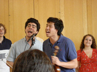

Welcome!
We are Tangled Up in Blue, Yale's only American folk singing group!RECRUITMENT SHOW!
Our Fall Recruitment Show will be Friday, September 14th in Sudler Hall (WLH)! Come to get a sense of our music, and sign up for an audition slot after the show! Hope to see you there!
 Tangled Up in Blue, or TUIB for short, is Yale University's only undergraduate American folk music singing group. We were founded in 1986 by Nerissa Nields, and we've been delighting audiences on-campus and around the country ever since. TUIB (pronounced "twib") performs several on campus concerts throughout the academic year, perhaps most notably our end-of-semester blowout bonanza, Bees n' Cheer. Check out our Facebook and Twitter for info on upcoming concerts. We also travel and perform on a week-long spring tour each year - to find out more about past tours, click here.
Tangled Up in Blue, or TUIB for short, is Yale University's only undergraduate American folk music singing group. We were founded in 1986 by Nerissa Nields, and we've been delighting audiences on-campus and around the country ever since. TUIB (pronounced "twib") performs several on campus concerts throughout the academic year, perhaps most notably our end-of-semester blowout bonanza, Bees n' Cheer. Check out our Facebook and Twitter for info on upcoming concerts. We also travel and perform on a week-long spring tour each year - to find out more about past tours, click here.


TUIB has been playing American folk music since 1986. Our arrangements feature traditional folk instruments including mandolin, guitar, fiddle, harmonica, and banjo and four-part vocal harmonies that have, on occasion, made our mothers cry. We cover the music of a range of artists such as Bob Dylan, Crosby, Stills, Nash, and Young, Steven Foster, and Trampled by Turtles. In addition to these classics, TUIB will whip out the occasional Irish folk tune or drinking shanty and may even tickle your fancy with a women's rights protest song from the American Industrial Revolution. We arrange a few songs each year to add to our repertoire. Listen to songs from our most recent albums below.

Betty & Dupree
Too Much of Nothing
Wagon Wheel
Interested in purchasing a TUIB album? contact us!
Activities Bazaar
Come find our table at the bazaar! It will be the one surrounded by people jamming on guitars, banjos and mandolins. Make sure to sign up for our email list!
Audition Concert
If you missed the opportunity to get on our email list, no worries - show up at the Audition Concert, and you'll get the chance to sign up for an audition slot. Plus, you'll get to hear TUIB sing an hour-long set of folk music!
Auditions
Once you've gotten your audition slot, you'll have to prepare your solo. Choose a song that you feel comfortable singing, but also make sure the song shows off your voice. We want you to do well! Feel free to bring any instruments you play.
After auditions come Callbacks, but we'll let you know about those once auditions are over. Good luck! We can't wait to hear you!
Still got questions? Click here.
Check out some footage of our live performances!
Interested in booking Tuib for a performance? Click here.
-
To book a gig with TUIB or settle any transactions, order CDs and T-Shirts, or for inquiries about auditioning contact the business managers:
Cuchulain Kelly - cuchulain.kelly@yale.edu
Abby Eurich - abigail.eurich@yale.edu
Click here to download a publicity kit!
-
 To inquire about song selections or arrangements contact the music directors:
To inquire about song selections or arrangements contact the music directors:
Jacob Paul - jacob.paul@yale.edu
Gordon Moseley - gordon.moseley@yale.edu
-
With inquiries about this website or our Facebook or Twitter pages, contact the webmaster:
Natey Weinstein - nathaniel.weinstein@yale.edu